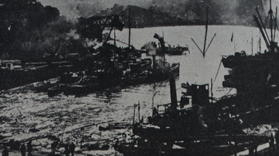
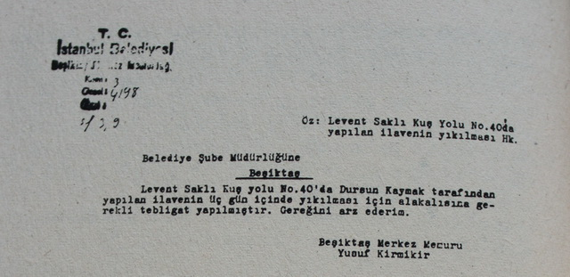
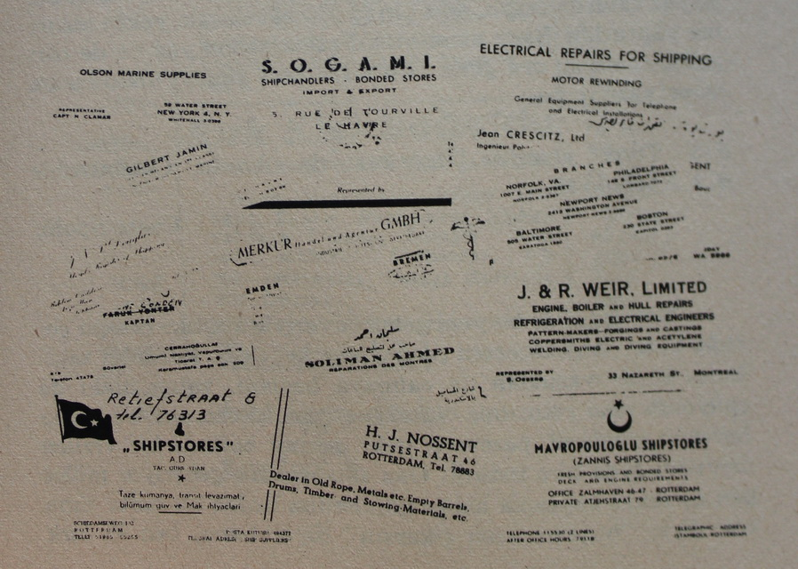
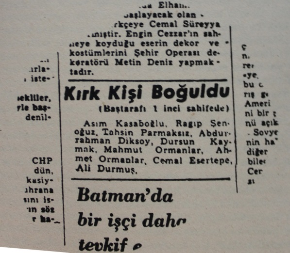

22.10.941
Sevgili karıcığım,
Acente getirdi şimdi mektubunu. Aşkolsun sana, koskoca seferde, varınca bir limana bir duble bira içerek yolculuğun acısını çıkarma hakkım yok mu benim? Bir bara mı gitmiş, bir kadına mı para yedirmişim? Elli kuruşluk bira seferde çok mu bana? Bense tüm geleceğimi ve şimdimi bir kulübe sahibi olabilmemiz için ve seninle el ele, göz göze ve baş başa gelecek günlerimizi o kulübenin geniş bahçesinde oyalanarak geçirebilmemiz için, ellerin çürük tekneleri içinde tanrının azgın boğa yılanlarından beter dalgalarıyla her an pençeleşerek ve boğuşarak geçirmekteydim. Ateşçilikten başladım, ciğeri beş para etmez üstlerimin gözüne gire gire lostromoluğa dek yükseldim ve daha da ikinci çarklığa yükselmek üzere olduğumu bildirirken bir şişe Alman birası için yüreğim acıya bulanır. Senin ela gözlerini görmeden ve nohut ve kuru fasulye ve kuru üzüm hoşafı ve binde bir pırasa yiyerek geçmiş olan günlerimi toplaşan on kara ve buruşuk yıl eder. Ve işte gözümün nuru karıcığım bana kalkmış bira içerken evin iki tuğlasını düşünmedin mi diyor. Ne tuhaf bir cihan felsefesidir ki biz işçi takımına her nesne; yemek, içki, giyecek maddeleri, ısı ve yatacak barınacak olsun ya da eğlence her vakit çok görünür ve insanlığımızı unutmamız istenir bizlerden ama, biz hep, hep değil de arada bir kendi kendimizi insan yerine koyarız. Yazık.
Kavuşmamıza kaldı yirmi gün, artık uzağında değilim ama bir tanecik karıcığım bana bir duble birayı çok görmesi yaşlı kıldı göz pınarlarımı, gene de denizin pürüzlü yüzünün ulaştırdığı yellerle kokunu almaya başladım bile. Sana Hint işi bir güzel bluz aldım, söylemeyecektim ama duramadım işte, kendime de bir kravat. Bağırta bağırta öpen kocan.
Dursun Kaymak
Not: şimdi telsiz aldık İstanbul’dan, yarın buradan gene Bombay’a o amansız ve haince saran ve parçalamadan sindiren ve eriten ateş denizine dönüyoruz. Bu duruma göre sana kavuşmama daha dört koca ay var, bu gemi sahipleri daha çok kazansın diye en az iki kilo eriyip yataklara düşeceğiz de demektir ve asıl sana hasret gitmem! Sana geminin son fotoğrafım gönderiyorum. Pervanenin üzerindeki son lomboz benim kamaram ama görünmüyor.
Not: gemide herkes süvariye düşman. Dört kişi kuru yemekten uyuz oldu, çoğunun da barsağı bozuk. Helanın önünde sıra bekliyoruz. Utanmaz tanrıdan korkmaz ve vicdansız süvari mürettebatın kumanyasını yarı yarıya çalıyor. Tayfalar gözümün içine bakıyor benim, “hı” desem çiğ çiğ yerler onu ama oralı olmuyorum ben; hele şu evin borcunu bir temizleyelim ve tapusunu alalım da ondan sonra gösteririm ben onlara çünkü bu herif patronla ortak çalışıyor, adamı işinden atar da sürüm sürüm süründürür bu namussuzlar. Korkma sen, benim aram iyi süvariyle.

Geçenki gelişimde nasıl karyoladan düşmüştük! Mektubunu gönderdiğim karttaki adrese yaz.
Dursun
17.6.1957
Saliha,
Bugün Cotta’ya vardık. Acente geldi ama senin mektubun gene yok. Ne oluyorsun, adresimi yazıhanedeki hırsızlardan öğren demiştim? Herhalde canın iki satır olsun yazmayı çekmemiştir kraliçe! Bulmuşun bir adı var, kendisi bulunmaz bir can sömür. Bir ekmek ağacı, cehennemin bir dibinde, dilini bilmediği yabancı ellerin bir yabancısı olarak tanrının başına buyruk ve ejderha denizlerinde boğuşup bir dilim ekmek için, tanrının tüm verilerinden yoksun, eğmiş boyun kara yazısına ve bu arada gene de bir kadın, bir yuva, bir bahçe sahibi olarak son günlerine de hazırlanıp insanlık savaşını mertçe vermiş temiz bir eş ki tanrı “yürü ya kulum yürü” dememiştir ona, üç beş ay ara ile uğradığı limanda, acente elinden alınan mektubunu karısının bulamaz da, bütün mürettebatın adı okunarak sıra ile mektuplarını almaları karşısında küçük düşmesini silkip atarak ve onurlu bir gülüşle susarak kıç altındaki kamarasına döner.
Dursun böyle işlere metelik vererek senin için üzülür mü sanıyorsun! Yapma bulma dünyasıdır bu.
Ne ekersen onu biçersin. Göze göz, dişe diş. 1. Evin aylık borcunu bankaya yatır. 2. Son taksitlerdir bunlar ve birkaç aya kadar evin tapusu benim olacaktır. 3. Kaç ay sonra tapuyu alacağımı bankadan öğren ve bana bildir. Bahçemi duvarla çevirip gireceğim içine. Duvar parasını toplayana dek çalışırım, yaşlı günlerimde ev kirası olmadıktan sonra emekli aylığım artar da yeter bile. Bahçemde çiçeklerim ve denizaşırı yerlerden getirdiğim tohumluklarımla uğraşarak ne bir eş, ne bir merhaba, şu dar gönlümü avutarak beklerim ölüm günlerimi yapayalnız. Konu komşular nasıl, Çengelköy’dekiler beni soruyorlar mı? 4. Aylığımı alır almaz yarısını bankaya yatır. 5. Manto yapayım deme üstündekiler yeter sana. Yoksa bahçe duvarları için değil de, senin manton için mi bu uçsuz bucaksız denizlerde tüketiyorum günlerimi? 6. Son mektubun (elli altı) tarihli ve benden bir bluz istemişsin, ne bluzu? eşine, yoldaşına iki satın esirgeyen kanma bluz değil zırnık almam, yağma yok, ben parayı şu koyu mavi ve sinsi deniz bahçelerinden sarı papatyalar olarak toplamıyorum. 7. Duvarları yapmaya başladılar mı, nasıl gidiyor son pazarlık nedir, bitiş tarihi bir bir istiyorum. Bu son olsun.
Kocan Dursun Kaymak

Not: demin gemicinin biri ambarın üstünde mektubunu bulmuş getirdi, acente elinden düşürmüş olacak. Gemide dün isyan çıktı, gazetelerde okuyup da meraklanma. Kısaca yazayım acenteye yetiştireceğim için kısa kesiyorum. Ben yokum zaten içlerinde Mehmet usta deriz tayfalardan biri, elma kabuğuna basıp düşerek bacağını kırar bunun üzerine gemicilerin 32 kişi olarak çoğu “ge-mide elma var” bağırtılarıyla güvertede toplandılar, önce kendilerine de elma verilmesini sonra ikinci kaptanın araya girmesiyle sadece kabuklarını istediler. Süvari kaptan köşkünde öğle uykusundan gürültüleriyle uyanır uyanmaz, korkuyla ve can havliyle telsiz kamarasına sığınıp kapıyı kilitleyerek “beni gemiciler, öldürüyorlar" diye İstanbul'a telsiz çektirir. Anlatınca ikinci kaptan giderek nasıl iki yıldır un çorbası, fasulye, nohuttan başka yemek yüzü görmediklerini, uğursuz alçak dışarı çıktı ve anlaştılar. Artık haftada bir gün temiz olarak buzlukta saklanmış elma, armut kabuğu yiyebilecekler, karşılık günde bir saat çok çalışarak gemiyi raspa edecekler. Dürzü hırsız Beyoğlu’nda bir apartman daha almış diyorlar, sen uğra da bir gün Safiyanıma, öğren, o bilir süvarinin karısınla konuşuyormuşlar. Öğren de bana yaz. Hoş bana göre hava hoş ya ikinci çarkçılar zabıtan sınıfına giriyor, bize ikinci sınıf yemek çıkıyor yani hafta bir yaş sebze ve meyva yiyebiliyoruz, gerçi gün aşırı yemektir hakkımız ama susuyoruz işte. Uğrayacağımız limanların adreslerini gönderiyorum. Gözlerinden Öperim.
Not: gelince seninle bir gün şöyle bir Kanlıca’ya uzanarak, batmasıyla birlikte güneşin, körfeze karşı olarak birer kâse yoğurt yeriz.
Kocan, Dursun
20.10.959

Saliha 15 gündür trevasada batmamıza ramak kaldı. Şu kahpe tekne nasıl oldu da dayandı bu fırtınaya şaştım, 10 şiddetinde esiyordu yel ve tüm kıç varda velalarını, kıç dümen makinesinin kapısını kırdı aldı götürdü bir de gemici Salihi. Kırk yıldır denizdeyim daha böyle bir fırtınaya tutulmamamışım. olur da batardık, kökü yok ya bu bokun. Gelince tuzbabaya vericem iki paket tuz, adadım vermesem olmaz. Dönmemiz gene uzadı gemiyi Arhanjelsk’te tamire sokacak bu dürzünün dördüncü dölü süvari tabii yüklü komisyon koparabilmek için de işi uzatacak, sonra kereste yükleyerek döneriz sürer iki, iki buçuk ay bu işler, bu son seferimdir artık top atsan çıkmam denize. Bezdim be.
Duvarların bittiğini, beş bin gittiğini yazmışın, gelince görürüm, insan fotoğrafını çıkarır da gönderir, ama artık iki ay kaldı sakın fotoğraf parası vereyim deme. Geriye dört bin üç yüz kaldı diyorsun, dört bin üç yüz elli olacak, yoksa manto mu yaptırdın? Bana olanı biteni saklamadan yaz ne de olsa gelince anlarım ona göre. Bu sefer kart almayı unutmuşum adresi yazıyorum:
S/S Turc, ybarda Deposites de Aceite Combustible
S.A.Aparado 46. Ceuta Spain.
Not: geçende bu yeni gelen süvariyle atıştık: orospu çocuğu bana "beğenmezsen çıkar gidersin” dedi. Keraneci zabitanın kumanyasından da çalmaya başladı, zaten öteki de çalıyordu ama yetmemiş olacak patrona ki onu aldı bu, daha hırsızını gönderdi, pezevenk gelir gelmez haftada bir verilen meyvayı ayda bire indirdi. Gaz sancısından geberiyor millet ben de ikinci kaptanla haber gönderdim neden bu hafta elma yok diye, “beğenmezsen çıkarsın” diyor bana, ben ki kırk yılımı bu hırsızları zengin etmeye harcadım senin yüzünden, şimdiyse yaş altmış ve çık git diyorlar bana. AH şu deyyuslara bir iş etmeden ölürsem gözüm açık gidecek. Gidecek ama. yapamadım, geç kaldım geç. vaktiyle gençken seni dinlemeyecektim şimdi bu yaştan sonra iyi kötü bir kulübe, bir bahçe duvar çevrilmiş beni beklerken, elin şişkin sırtlarınla çatış da al başına belayı, ama komaz tanrı yanına komaz, bu haksızlıkları dürzülerin. öteki dünyada iki elim on bir parmağım yakasındadır onların. Onların da senin de beni vaktiyle tuttuğun için.
Dursun Kaymak
